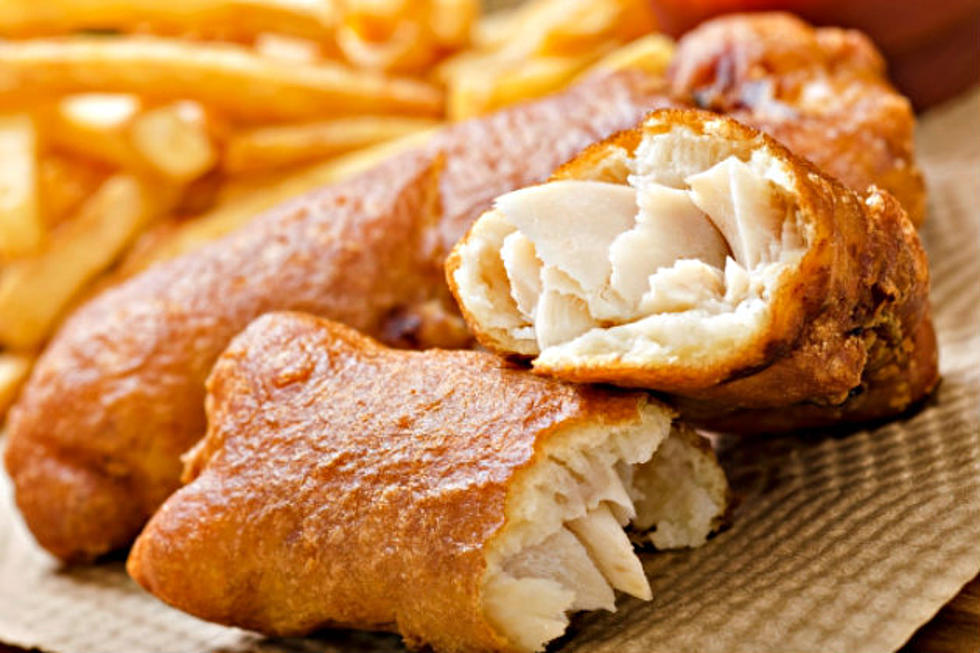

Fish fry refers both to the meal and the popular Friday night tradition in Wisconsin. The fish is battered or breaded, then deep-fried, which is the fastest way to cook large quantities of fish. The Friday night event dates back to the medieval Roman Catholic times. Traditionally, fried fish is accompanied by coleslaw, potato salad, French fries, tartar sauce, hushpuppies, or lemon slices.
Meal prep time : 30 minutes
Servings : 4